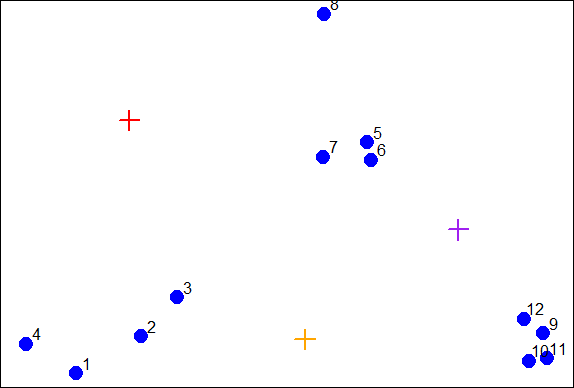
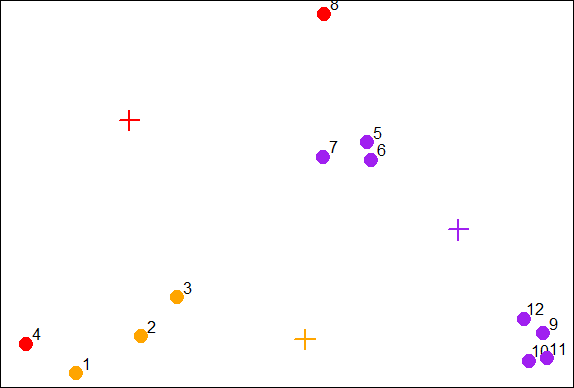
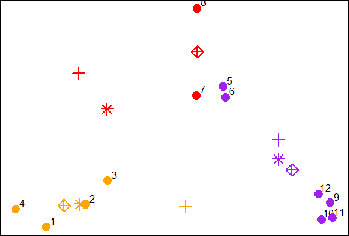
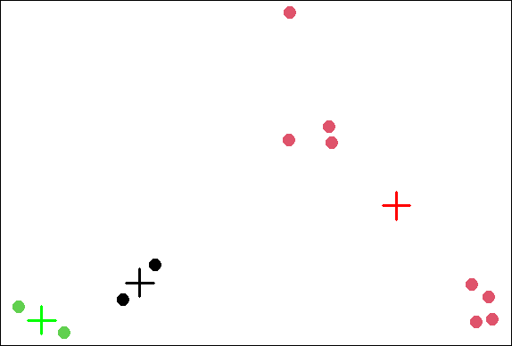
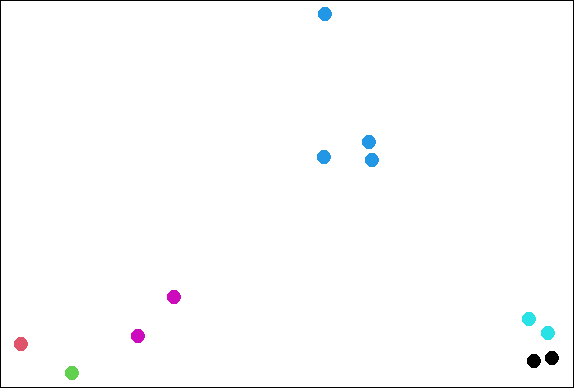
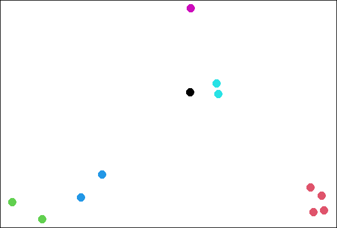
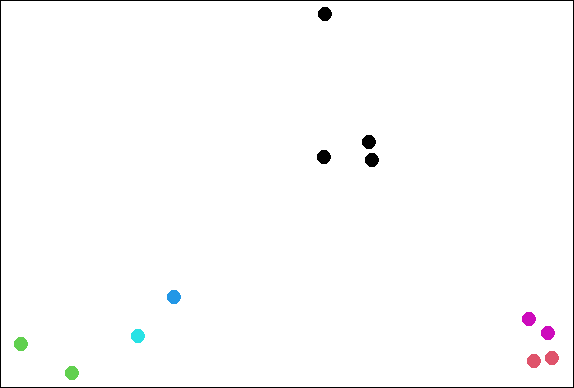

K Means Clustering
library(swirl)
swirl()
| Welcome to swirl! Please sign in. If you've been here before, use the same name as
| you did then. If you are new, call yourself something unique.
What shall I call you? Krishnakanth Allika
| Please choose a course, or type 0 to exit swirl.
1: Exploratory Data Analysis
2: Take me to the swirl course repository!
Selection: 1
| Please choose a lesson, or type 0 to return to course menu.
1: Principles of Analytic Graphs 2: Exploratory Graphs
3: Graphics Devices in R 4: Plotting Systems
5: Base Plotting System 6: Lattice Plotting System
7: Working with Colors 8: GGPlot2 Part1
9: GGPlot2 Part2 10: GGPlot2 Extras
11: Hierarchical Clustering 12: K Means Clustering
13: Dimension Reduction 14: Clustering Example
15: CaseStudySelection: 12
| Attempting to load lesson dependencies...
| Package ‘ggplot2’ loaded correctly!
| Package ‘fields’ loaded correctly!
| Package ‘jpeg’ loaded correctly!
| Package ‘datasets’ loaded correctly!
| | 0%
| K_Means_Clustering. (Slides for this and other Data Science courses may be found at
| github https://github.com/DataScienceSpecialization/courses/. If you care to use
| them, they must be downloaded as a zip file and viewed locally. This lesson
| corresponds to 04_ExploratoryAnalysis/kmeansClustering.)
...
|== | 2%
| In this lesson we'll learn about k-means clustering, another simple way of examining
| and organizing multi-dimensional data. As with hierarchical clustering, this
| technique is most useful in the early stages of analysis when you're trying to get
| an understanding of the data, e.g., finding some pattern or relationship between
| different factors or variables.
...
|=== | 4%
| R documentation tells us that the k-means method "aims to partition the points into
| k groups such that the sum of squares from points to the assigned cluster centres is
| minimized."
...
|===== | 6%
| Since clustering organizes data points that are close into groups we'll assume we've
| decided on a measure of distance, e.g., Euclidean.
...
|====== | 8%
| To illustrate the method, we'll use these random points we generated, familiar to
| you if you've already gone through the hierarchical clustering lesson. We'll
| demonstrate k-means clustering in several steps, but first we'll explain the general
| idea.

...
|======== | 10%
| As we said, k-means is a partioning approach which requires that you first guess how
| many clusters you have (or want). Once you fix this number, you randomly create a
| "centroid" (a phantom point) for each cluster and assign each point or observation
| in your dataset to the centroid to which it is closest. Once each point is assigned
| a centroid, you readjust the centroid's position by making it the average of the
| points assigned to it.
...
|========= | 12%
| Once you have repositioned the centroids, you must recalculate the distance of the
| observations to the centroids and reassign any, if necessary, to the centroid
| closest to them. Again, once the reassignments are done, readjust the positions of
| the centroids based on the new cluster membership. The process stops once you reach
| an iteration in which no adjustments are made or when you've reached some
| predetermined maximum number of iterations.
...
|=========== | 14%
| As described, what does this process require?
1: All of the others
2: A number of clusters
3: A defined distance metric
4: An initial guess as to cluster centroids
Selection: 1
| That's the answer I was looking for.
|============ | 16%
| So k-means clustering requires some distance metric (say Euclidean), a hypothesized
| fixed number of clusters, and an initial guess as to cluster centroids. As
| described, what does this process produce?
1: All of the others
2: An assignment of each point to a cluster
3: A final estimate of cluster centroids
Selection: 1
| You nailed it! Good job!
|============== | 18%
| When it's finished k-means clustering returns a final position of each cluster's
| centroid as well as the assignment of each data point or observation to a cluster.
...
|=============== | 20%
| Now we'll step through this process using our random points as our data. The
| coordinates of these are stored in 2 vectors, x and y. We eyeball the display and
| guess that there are 3 clusters. We'll pick 3 positions of centroids, one for each
| cluster.
...
|================= | 22%
| We've created two 3-long vectors for you, cx and cy. These respectively hold the x-
| and y- coordinates for 3 proposed centroids. For convenience, we've also stored them
| in a 2 by 3 matrix cmat. The x coordinates are in the first row and the y
| coordinates in the second. Look at cmat now.
cmat
[,1] [,2] [,3] [1,] 1 1.8 2.5 [2,] 2 1.0 1.5| Excellent work!
|================== | 24%
| The coordinates of these points are (1,2), (1.8,1) and (2.5,1.5). We'll add these
| centroids to the plot of our points. Do this by calling the R command points with 6
| arguments. The first 2 are cx and cy, and the third is col set equal to the
| concatenation of 3 colors, "red", "orange", and "purple". The fourth argument is pch
| set equal to 3 (a plus sign), the fifth is cex set equal to 2 (expansion of
| character), and the final is lwd (line width) also set equal to 2.
points(cx,cy,col=c("red","orange","purple"),pch=3,cex=2,lwd=2)

| You nailed it! Good job!
|==================== | 26%
| We see the first centroid (1,2) is in red. The second (1.8,1), to the right and
| below the first, is orange, and the final centroid (2.5,1.5), the furthest to the
| right, is purple.
...
|====================== | 28%
| Now we have to calculate distances between each point and every centroid. There are
| 12 data points and 3 centroids. How many distances do we have to calculate?
1: 15
2: 108
3: 36
4: 9
Selection: 3
| You are amazing!
|======================= | 30%
| We've written a function for you called mdist which takes 4 arguments. The vectors
| of data points (x and y) are the first two and the two vectors of centroid
| coordinates (cx and cy) are the last two. Call mdist now with these arguments.
mdist(x,y,cx,cy)
[,1] [,2] [,3] [,4] [,5] [,6] [,7] [,8] [1,] 1.392885 0.9774614 0.7000680 1.264693 1.1894610 1.2458771 0.8113513 1.026750 [2,] 1.108644 0.5544675 0.3768445 1.611202 0.8877373 0.7594611 0.7003994 2.208006 [3,] 3.461873 2.3238956 1.7413021 4.150054 0.3297843 0.2600045 0.4887610 1.337896 [,9] [,10] [,11] [,12] [1,] 4.5082665 4.5255617 4.8113368 4.0657750 [2,] 1.1825265 1.0540994 1.2278193 1.0090944 [3,] 0.3737554 0.4614472 0.5095428 0.2567247| Excellent job!
|========================= | 32%
| We've stored these distances in the matrix distTmp for you. Now we have to assign a
| cluster to each point. To do that we'll look at each column and ?
1: add up the 3 entries.
2: pick the minimum entry
3: pick the maximum entry
Selection: 2
| Perseverance, that's the answer.
|========================== | 34%
| From the distTmp entries, which cluster would point 6 be assigned to?
1: none of the above
2: 3
3: 2
4: 1
Selection: 2
| Keep working like that and you'll get there!
|============================ | 36%
| R has a handy function which.min which you can apply to ALL the columns of distTmp
| with one call. Simply call the R function apply with 3 arguments. The first is
| distTmp, the second is 2 meaning the columns of distTmp, and the third is which.min,
| the function you want to apply to the columns of distTmp. Try this now.
apply(distTmp,2,which.min)
[1] 2 2 2 1 3 3 3 1 3 3 3 3
| You are really on a roll!
|============================= | 38%
| You can see that you were right and the 6th entry is indeed 3 as you answered
| before. We see the first 3 entries were assigned to the second (orange) cluster and
| only 2 points (4 and 8) were assigned to the first (red) cluster.
...
|=============================== | 40%
| We've stored the vector of cluster colors ("red","orange","purple") in the array
| cols1 for you and we've also stored the cluster assignments in the array newClust.
| Let's color the 12 data points according to their assignments. Again, use the
| command points with 5 arguments. The first 2 are x and y. The third is pch set to
| 19, the fourth is cex set to 2, and the last, col is set to cols1[newClust].
points(x,y,pch=19,cex=2,col=cols1[newClust])

| Keep up the great work!
|================================ | 42%
| Now we have to recalculate our centroids so they are the average (center of gravity)
| of the cluster of points assigned to them. We have to do the x and y coordinates
| separately. We'll do the x coordinate first. Recall that the vectors x and y hold
| the respective coordinates of our 12 data points.
...
|================================== | 44%
| We can use the R function tapply which applies "a function over a ragged array".
| This means that every element of the array is assigned a factor and the function is
| applied to subsets of the array (identified by the factor vector). This allows us to
| take advantage of the factor vector newClust we calculated. Call tapply now with 3
| arguments, x (the data), newClust (the factor array), and mean (the function to
| apply).
tapply(x,newClust,mean)
1 2 3 1.210767 1.010320 2.498011| Perseverance, that's the answer.
|=================================== | 46%
| Repeat the call, except now apply it to the vector y instead of x.
tapply(y,newClust,mean)
1 2 3 1.730555 1.016513 1.354373| Your dedication is inspiring!
|===================================== | 48%
| Now that we have new x and new y coordinates for the 3 centroids we can plot them.
| We've stored off the coordinates for you in variables newCx and newCy. Use the R
| command points with these as the first 2 arguments. In addition, use the arguments
| col set equal to cols1, pch equal to 8, cex equal to 2 and lwd also equal to 2.
points(newCx,newCy,col=cols1,pch=8,cex=2,lwd=2)

| Keep up the great work!
|====================================== | 50%
| We see how the centroids have moved closer to their respective clusters. This is
| especially true of the second (orange) cluster. Now call the distance function mdist
| with the 4 arguments x, y, newCx, and newCy. This will allow us to reassign the data
| points to new clusters if necessary.
mdist(x,y,newCx,newCy)
[,1] [,2] [,3] [,4] [,5] [,6] [,7] [,8] [1,] 0.98911875 0.539152725 0.2901879 1.0286979 0.7936966 0.8004956 0.4650664 1.028698 [2,] 0.09287262 0.002053041 0.0734304 0.2313694 1.9333732 1.8320407 1.4310971 2.926095 [3,] 3.28531180 2.197487387 1.6676725 4.0113796 0.4652075 0.3721778 0.6043861 1.643033 [,9] [,10] [,11] [,12] [1,] 3.3053706 3.282778 3.5391512 2.9345445 [2,] 3.5224442 3.295301 3.5990955 3.2097944 [3,] 0.2586908 0.309730 0.3610747 0.1602755| Excellent work!
|======================================== | 52%
| We've stored off this new matrix of distances in the matrix distTmp2 for you. Recall
| that the first cluster is red, the second orange and the third purple. Look closely
| at columns 4 and 7 of distTmp2. What will happen to points 4 and 7?
1: They will both change to cluster 2
2: Nothing
3: They're the only points that won't change clusters
4: They will both change clusters
Selection: 4
| You nailed it! Good job!
|========================================== | 54%
| Now call apply with 3 arguments, distTmp2, 2, and which.min to find the new cluster
| assignments for the points.
apply(distTmp2,2,which.min)
[1] 2 2 2 2 3 3 1 1 3 3 3 3
| That's a job well done!
|=========================================== | 56%
| We've stored off the new cluster assignments in a vector of factors called
| newClust2. Use the R function points to recolor the points with their new
| assignments. Again, there are 5 arguments, x and y are first, followed by pch set to
| 19, cex to 2, and col to cols1[newClust2].
points(x,y,pch=19,cex=2,col=cols1[newClust2])

| Keep working like that and you'll get there!
|============================================= | 58%
| Notice that points 4 and 7 both changed clusters, 4 moved from 1 to 2 (red to
| orange), and point 7 switched from 3 to 2 (purple to red).
...
|============================================== | 60%
| Now use tapply to find the x coordinate of the new centroid. Recall there are 3
| arguments, x, newClust2, and mean.
tapply(x,newClust2,mean)
1 2 3 1.8878628 0.8904553 2.6001704| You're the best!
|================================================ | 62%
| Do the same to find the new y coordinate.
tapply(y,newClust2,mean)
1 2 3 2.157866 1.006871 1.274675| Excellent work!
|================================================= | 64%
| We've stored off these coordinates for you in the variables finalCx and finalCy.
| Plot these new centroids using the points function with 6 arguments. The first 2 are
| finalCx and finalCy. The argument col should equal cols1, pch should equal 9, cex 2
| and lwd 2.
points(finalCx,finalCy,col=cols1,pch=9,cex=2,lwd=2)

| You nailed it! Good job!
|=================================================== | 66%
| It should be obvious that if we continued this process points 5 through 8 would all
| turn red, while points 1 through 4 stay orange, and points 9 through 12 purple.
...
|==================================================== | 68%
| Now that you've gone through an example step by step, you'll be relieved to hear
| that R provides a command to do all this work for you. Unsurprisingly it's called
| kmeans and, although it has several parameters, we'll just mention four. These are
| x, (the numeric matrix of data), centers, iter.max, and nstart. The second of these
| (centers) can be either a number of clusters or a set of initial centroids. The
| third, iter.max, specifies the maximum number of iterations to go through, and
| nstart is the number of random starts you want to try if you specify centers as a
| number.
...
|====================================================== | 70%
| Call kmeans now with 2 arguments, dataFrame (which holds the x and y coordinates of
| our 12 points) and centers set equal to 3.
kmeans(dataFrame,centers=3)
``` K-means clustering with 3 clusters of sizes 4, 4, 4
Cluster means:
x y
1 0.8904553 1.0068707
2 2.8534966 0.9831222
3 1.9906904 2.0078229
Clustering vector:
[1] 1 1 1 1 3 3 3 3 2 2 2 2
Within cluster sum of squares by cluster:
[1] 0.34188313 0.03298027 0.34732441
(between_SS / total_SS = 93.6 %)
Available components:
[1] "cluster" "centers" "totss" "withinss" "tot.withinss"
[6] "betweenss" "size" "iter" "ifault"
```
| You are really on a roll!
|======================================================= | 72%
| The program returns the information that the data clustered into 3 clusters each of
| size 4. It also returns the coordinates of the 3 cluster means, a vector named
| cluster indicating how the 12 points were partitioned into the clusters, and the sum
| of squares within each cluster. It also shows all the available components returned
| by the function. We've stored off this data for you in a kmeans object called kmObj.
| Look at kmObj$iter to see how many iterations the algorithm went through.
kmObj$iter
[1] 1
| You got it!
|========================================================= | 74%
| Two iterations as we did before. We just want to emphasize how you can access the
| information available to you. Let's plot the data points color coded according to
| their cluster. This was stored in kmObj$cluster. Run plot with 5 arguments. The
| data, x and y, are the first two; the third, col is set equal to kmObj$cluster, and
| the last two are pch and cex. The first of these should be set to 19 and the last to
| 2.
plot(x,y,col=kmObj$cluster,pch=19,cex=2)

| You are doing so well!
|=========================================================== | 76%
| Now add the centroids which are stored in kmObj$centers. Use the points function
| with 5 arguments. The first two are kmObj$centers and col=c("black","red","green").
| The last three, pch, cex, and lwd, should all equal 3.
points(kmObj$centers,col=c("black","red","green"),pch=3,cex=3,lwd=3)

| Excellent work!
|============================================================ | 78%
| Now for some fun! We want to show you how the output of the kmeans function is
| affected by its random start (when you just ask for a number of clusters). With
| random starts you might want to run the function several times to get an idea of the
| relationships between your observations. We'll call kmeans with the same data points
| (stored in dataFrame), but ask for 6 clusters instead of 3.
...
|============================================================== | 80%
| We'll plot our data points several times and each time we'll just change the
| argument col which will show us how the R function kmeans is clustering them. So,
| call plot now with 5 arguments. The first 2 are x and y. The third is col set equal
| to the call kmeans(dataFrame,6)$cluster. The last two (pch and cex) are set to 19
| and 2 respectively.
plot(x,y,col=kmeans(dataFrame,6)$cluster,pch=19,cex=2)

| You nailed it! Good job!
|=============================================================== | 82%
| See how the points cluster? Now recall your last command and rerun it.
plot(x,y,col=kmeans(dataFrame,6)$cluster,pch=19,cex=2)

| Nice work!
|================================================================= | 84%
| See how the clustering has changed? As the Teletubbies would say, "Again! Again!"
plot(x,y,col=kmeans(dataFrame,6)$cluster,pch=19,cex=2)

| That's the answer I was looking for.
|================================================================== | 86%
| So the clustering changes with different starts. Perhaps 6 is too many clusters?
| Let's review!
...
|==================================================================== | 88%
| True or False? K-means clustering requires you to specify a number of clusters
| before you begin.
1: False
2: True
Selection: 2
| You nailed it! Good job!
|===================================================================== | 90%
| True or False? K-means clustering requires you to specify a number of iterations
| before you begin.
1: True
2: False
Selection: 2
| You got it right!
|======================================================================= | 92%
| True or False? Every data set has a single fixed number of clusters.
1: False
2: True
Selection: 1
| Excellent job!
|======================================================================== | 94%
| True or False? K-means clustering will always stop in 3 iterations
1: True
2: False
Selection: 2
| You are really on a roll!
|========================================================================== | 96%
| True or False? When starting kmeans with random centroids, you'll always end up with
| the same final clustering.
1: False
2: True
Selection: 1
| Great job!
|=========================================================================== | 98%
| Congratulations! We hope this means you found this lesson oK.
...
|=============================================================================| 100%
| Would you like to receive credit for completing this course on Coursera.org?
1: No
2: Yes
Selection: 2
What is your email address? xxxxxx@xxxxxxxxxxxx
What is your assignment token? xXxXxxXXxXxxXXXx
Grade submission succeeded!
| Excellent work!
| You've reached the end of this lesson! Returning to the main menu...
| Please choose a course, or type 0 to exit swirl.
1: Exploratory Data Analysis
2: Take me to the swirl course repository!
Selection: 0
| Leaving swirl now. Type swirl() to resume.
rm(list=ls())
Last updated 2020-05-09 20:59:57.636628 IST
Comments